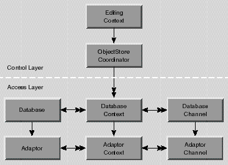

Extends:
next.util.NextObject
| Other Framework classes create them. | Adaptor instances are generally created automatically. |
| adaptorWithModel | Creates a new adaptor with the adaptor name in the specified model. |
| adaptorWithName | Creates a new adaptor with the specified name. |
| assertConnectionDictionaryIsValid | Verifies that the adaptor can connect with its connection information. |
| setConnectionDictionary | Sets the connection dictionary. |
adaptorWithName and adaptorWithModel, to create instances of a concrete subclass. The Adaptor class defines the methods that find and load the concrete adaptors from bundles. However, you rarely interact with a concrete adaptor either. Generally, adaptors are automatically created and used by other classes in the Enterprise Objects Framework.The Adaptor, AdaptorContext, and AdaptorChannel classes form the adaptor level of the Enterprise Objects Framework. An Adaptor can manage several AdaptorContexts, each of which represents a transaction scope on the database server. An AdaptorContext can in turn manage several AdaptorChannels, each of which handles actual access to the data on the server. An adaptor for a particular database may support a limited number of contexts per adaptor or channels per context, but an adaptor is guaranteed at least one of each.
Typically an application uses higher level objects such as an EditingContext and a DatabaseContext that drive the adaptor level objects (Figure 2). Consequently, you don't usually have to interact with them. Each of the adaptor level classes have counterparts in the database level that use the adaptor level to interact with the database. In turn, classes in the control layer use database level classes to perform their operations.

Figure 2 The Adaptor Level and Higher Level Classes
If your application includes an EditingContext as shown in Figure 2, the editing context creates its database level objects, and the database level objects create their own adaptor level objects. Once the network of objects is in place your code can interact with an object in the adaptor level, but it's rarely necessary. Most applications that explicitly message adaptor level objects do so to perform one of the following tasks:
setConnectionDictionary, and assertConnectionDictionaryIsValid.
beginTransaction, commitTransaction, and rollbackTransaction.
executeStoredProcedure and evaluateExpression.
EditingContext editingContext; // Assume this exists.
String entityName; // Assume this exists.
FetchSpecification fspec;
ObjectStoreCoordinator rootStore;
DatabaseContext dbContext;
Adaptor adaptor;
AdaptorContext adContext;
fspec = new FetchSpecification(entityName, null, null);
rootStore = (ObjectStoreCoordinator)editingContext.rootObjectStore();
dbContext = (DatabaseContext)rootStore.objectStoreForFetchSpecification(fspec);
adaptor = dbContext.database().adaptor();
adContext = dbContext.adaptorContext();
This example first creates a fetch specification, providing just the entity name as an argument. Of course, you can use a fetch specification that has non-null values for all of its arguments, but only the entity name is used by the ObjectStore objectStoreForFetchSpecification method. Next, the example gets the editing context's ObjectStoreCoordinator using the EditingContext method rootObjectStore. rootObjectStore returns an ObjectStore and not an ObjectStoreCoordinator, because it's possible to substitute a custom object store in place of an object store coordinator. Similarly, the ObjectStoreCoordinator method objectStoreForFetchSpecification returns a CooperatingObjectStore instead of a DatabaseContext because it's possible to substitute a custom cooperating object store in place of a database context. If your code performs any such substitutions, you should alter the above code example to match your custom object store's API. See the class specifications for ObjectStore, ObjectStoreCoordinator, and CooperatingObjectStore for more information.
An EditingContext's ObjectStoreCoordinator can have more than one set of database and adaptor level objects. Consequently, to get a database context from the object store coordinator, you have to provide information that the coordinator can use to choose the correct database context. The code example above provides a FetchSpecification using the method objectStoreForFetchSpecification, but you could specify different criteria by using one of the following ObjectStoreCoordinator methods instead:
| Method | Description |
|---|---|
| cooperatingObjectStores | Returns an array of the ObjectStoreCoordinator's cooperating object stores. |
| objectStoreForGlobalID | Returns the cooperating object store for the enterprise object identified by the provided GlobalID. |
| objectStoreForObject | Returns the cooperating object store for the provided enterprise object. |
After you have the database context, you can get the corresponding Adaptor and AdaptorContext as shown in the example above.
You normally create an adaptor with the method adaptorWithModel, specifying an existing Model object (see the Model class specification for information on loading a model file). The model contains the name of the adaptor bundle it needs, and also contains database connection information so that an application can connect immediately without requiring the user to type a password. The connection information consists of all the values, such as user name and password, needed to connect to the database server. It's stored in a dictionary whose keys identify the information the server expects, and whose values are the values that the adaptor will try when connecting. Each adaptor uses different keys; see your adaptor's documentation for keys it uses.
A newly created adaptor has no adaptor contexts; to create a new context send your adaptor a createAdaptorContext message.
setConnectionDictionary or setDelegate), your implementations should incorporate the superclass's implementation through a message to super.The remaining Adaptor methods must be overridden by concrete adaptor subclasses in terms of the persistent storage system with which it interacts:
adaptorWithModel(next.eo.Model aModel)
Creates and returns a new adaptor by extracting the adaptor name from aModel, invoking adaptorWithName and assigning aModel's connection dictionary to the new adaptor. Throws an exception if aModel is null, if aModel's adaptor name is null, or if the adaptor named in aModel can't be loaded.
See also:
adaptorName(Model), setConnectionDictionary
adaptorWithName(java.lang.String name)
Creates and returns a new adaptor, loading it from the framework named name if necessary. For example, this code excerpt creates an adaptor from a framework named AcmeEOAdaptor.framework:
Adaptor myAdaptor = Adaptor.adaptorWithName("Acme");
This method searches the application's main bundle, ~/Library/Frameworks, LocalLibrary/Frameworks, and NextLibrary/Frameworks for the first framework whose base filename (that is, the filename without the ".framework" extension) corresponds to name. However, note that dynamic loading isn't available on PDO platforms. Consequently, you must statically link your adaptor into applications for PDO: In this case, adaptorWithName simply looks in the runtime for an adaptor class corresponding with the specified name. Throws an exception if name is null or if an adaptor class corresponding with name can't be found.
Usually you'd use adaptorWithModel to create a new adaptor, but you can use this method when you don't have a model. In fact, this method is typically used when you're creating an adaptor for the purpose of creating a model from an existing database.
assignExternalInfoForAttribute(next.eo.Attribute anAttribute)
Overridden by adaptor subclasses to assign database-specific characteristics to anAttribute. Adaptor's implementation assigns an external type and then assigns a column name based on the attribute name. For example, assignExternalInfoForAttribute assigns the column name "FIRST_NAME" to an attribute named "firstName". The method makes no changes to anAttribute's column name if anAttribute is derived.
See also:
assignExternalInfoForEntireModel
assignExternalInfoForEntireModel(next.eo.Model aModel)
Assigns database-specific characteristics to aModel. Used in EOModeler to switch a model's adaptor. This method examines each entity in aModel. If an entity's external name is not set and all of the entity's attribute's external names are not set, then this method uses assignExternalInfoForEntity and assignExternalInfoForAttribute to assign external names. If the entity's external name is set or if any of the entity's attributes' external names are set, then the method doesn't assign external names to the entity or any of its attributes. Regardless, this method assigns external types for all the model's attributes.
assignExternalInfoForEntity(next.eo.Entity anEntity)
Overridden by adaptor subclasses to assign database-specific characteristics to anEntity. Adaptor's implementation assigns an external name to anEntity based on anEntity's name. For example, assignExternalInfoForEntity assigns the external name "MOVIE" to an entity named "Movie". An adaptor subclass should override this method to assign additional database-specific characteristics, if any.
See also:
assignExternalInfoForEntireModel
availableAdaptorNames()
Returns an array containing the names of all available adaptors. If no adaptors are found, this method returns an empty array.
externalTypesWithModel(next.eo.Model aModel)
Implemented by subclasses to return the names of the database types (such as Sybase "varchar" or Oracle "NUMBER") for use with the adaptor. aModel is an optional argument that can be used to supplement the adaptor's set of database types with additional, user-defined database types. See your adaptor's documentation for information on if and how it uses aModel.
An adaptor subclass should implement this method.
internalTypeForExternalTypeInModel(java.lang.String extType,
next.eo.Model aModel)
Implemented by subclasses to return the name of the Java class used to represent values stored in the database as extType. aModel is an optional argument that can be used to supplement the adaptor's set of type mappings with additional mappings for user-defined database types. See your adaptor's documentation for information on if and how it uses model. Returns null if no mapping for extType is found.
An adaptor subclass should implement this method.
setExpressionClassNameForAdaptorClassName(java.lang.String sqlExpressionClassName,
java.lang.String adaptorClassName)
Sets the expression class for instances of the class named adaptorClassName to sqlExpressionClassName. If sqlExpressionClassName is null, restores the expression class to the default. Throws an exception if adaptorClassName is null or the empty string.
Use this method to substitute a subclass of SQLExpression for the expression class provided by the adaptor.
assertConnectionDictionaryIsValid()
Implemented by subclasses to verify that the adaptor can connect to the database server with its connection dictionary. Briefly forms a connection to the server to validate the connection dictionary and then closes the connection. Throws an exception if the connection dictionary contains invalid information.
An adaptor subclass must override this method without invoking Adaptor's implementation.
See also:
setConnectionDictionary
canServiceModel(next.eo.Model aModel)
Returns true if the receiver can service aModel, false otherwise. Adaptor's implementation returns true if the receiver's connection dictionary is equal to aModel's connection dictionary as determined by next.util.ImmutableHashtable's equals method.
A subclass of Adaptor doesn't need to override this method.
connectionDictionary()
Returns the receiver's connection dictionary, or null if the adaptor doesn't have one. The connection dictionary contains the values, such as user name and password, needed to connect to the database server. The dictionary's keys identify the information the server expects, and its values are the values that the adaptor will try when connecting. Each adaptor uses different keys; see your adaptor's documentation for keys it uses.
A subclass of Adaptor doesn't need to override this method.
See also:
setConnectionDictionary
contexts()
Returns the adaptor contexts created by the receiver, or null if no adaptor contexts have been created. A subclass of Adaptor doesn't need to override this method.
See also:
createAdaptorContext
createAdaptorContext()
Implemented by subclasses to create and return a new AdaptorContext, or null if a new context can't be created. A newly created Adaptor has no contexts.
An adaptor subclass must override this method without invoking Adaptor's implementation.
See also:
contexts
databaseEncoding()
Returns the string encoding used to encode and decode database strings. An adaptor's database encoding is stored in the connection dictionary with the key "databaseEncoding". If the connection dictionary doesn't have an entry for the database encoding, the default C string encoding is used. This method throws an exception if the receiver's database encoding isn't valid.
A database system stores strings in a particular character set. The Framework needs to know what character set the database system uses so it can encode and decode strings coming from and going to the database server. The string encoding returned from this method specifies the character set the Framework uses.
A subclass of Adaptor doesn't need to override this method.
delegate()
Returns the receiver's delegate or null if a delegate has not been assigned. A subclass of Adaptor doesn't need to override this method.
See also:
setDelegate
fetchedValueForDataValue(next.util.ImmutableBytes value,
next.eo.Attribute anAttribute)
Overridden by subclasses to return the value that the receiver's database server would ultimately store for value if it was inserted or updated in the column described by anAttribute. This method is invoked from fetchedValueForValue when the value argument is a next.util.ImmutableBytes.
Adaptor's implementation returns value unchanged. An adaptor subclass should override this method if the adaptor's database performs transformations on binary types, such as BLOBs.
fetchedValueForDateValue(next.util.CalendarDate aCalendarDate,
next.eo.Attribute anAttribute)
Overridden by subclasses to return the value that the receiver's database server would ultimately store for aCalendarDate if it was inserted or updated in the column described by anAttribute. This method is invoked from fetchedValueForValue when the value argument is a date.
Adaptor's implementation returns aCalendarDate unchanged. An adaptor subclass should override this method to convert or format date values. For example, a concrete adaptor subclass could set aCalendarDate's millisecond value to 0.
fetchedValueForNumberValue(java.lang.Number aNumber,
next.eo.Attribute anAttribute)
Overridden by subclasses to return the value that the receiver's database server would ultimately store for aNumber if it was inserted or updated in the column described by anAttribute. This method is invoked from fetchedValueForValue when the value argument is a number.
Adaptor's implementation returns aNumber unchanged. An adaptor subclass should override this method to convert or format numeric values. For example, a concrete adaptor subclass should probably round aNumber according to the precision and scale of anAttribute.
fetchedValueForStringValue(java.lang.String aString,
next.eo.Attribute anAttribute)
Overridden by subclasses to return the value that the receiver's database server would ultimately store for aString if it was inserted or updated in the column described by anAttribute. This method is invoked from fetchedValueForValue when the value argument is a string.
Adaptor's implementation trims trailing spaces and returns null for zero-length strings. An adaptor subclass should override this method to perform any additional conversion or formatting on string values.
fetchedValueForValue(java.lang.Object anObject,
next.eo.Attribute anAttribute)
Returns the value that the receiver's database server would ultimately store for anObject if it was inserted or updated in the column described by anAttribute. The Framework uses this method to keep enterprise object snapshots in sync with database values. For example, assume that a product's price is marked down 15%. If the product's original price is 5.25, the sale price is 5.25*.85, or 4.4625. When the Framework updates the product's price, the database server truncates the price to 4.46 (assuming the scale of the database's price column is 2). Before performing the update, the Framework sends the adaptor a fetchedValueForValue message with the value 4.4625. The adaptor performs the database-specific transformation and returns 4.46. The Framework assigns the truncated value to the product object and to the product object's snapshot and then proceeds with the update.
An adaptor subclass can override this method or one of the data type-specific fetchedValue... methods. Adaptor's implementation of fetchedValueForValue invokes one of the data type-specific methods depending on anObject's class. If anObject is not a string, number, date, or data object (that is, an instance of java.lang.String, java.lang.Number, next.util.Date, next.util.ImmutableBytes, or any of their subclasses), fetchedValueForValue returns anObject unchanged.
This method invokes the next.eo.AdaptorDelegates method fetchedValueForAttribute which can override the adaptor's default behavior.
See also:
fetchedValueForDataValue, fetchedValueForDateValue, fetchedValueForNumberValue,
fetchedValueForStringValue, valueFactoryMethod (Attribute)
hasOpenChannels()
Returns true if any of the receiver's contexts have open channels, false otherwise. A subclass of Adaptor doesn't need to override this method.
See also:
hasOpenChannels (AdaptorContext)
isValidQualifierTypeInModel(java.lang.String typeName, next.eo.Model aModel)
Implemented by subclasses to return true if an attribute of type typeName can be used in a qualifier (a SQL WHERE clause) sent to the database server, or false otherwise. typeName is the name of a type as required by the database server, such as Sybase "varchar" or Oracle "NUMBER". aModel is an optional argument that can be used to supplement the adaptor's set of type mappings with additional mappings for user-defined database types. See your adaptor's documentation for information on if and how it uses aModel.
An adaptor subclass must override this method without invoking Adaptor's implementation.
name()
Returns the adaptor's name; this is usually the base filename of the framework from which the adaptor was loaded. For example, if an adaptor was loaded from a framework named AcmeEOAdaptor.framework, this method returns "Acme".
A subclass of Adaptor doesn't need to override this method.
See also:
adaptorWithName
setConnectionDictionary(next.util.ImmutableHashtable dictionary)
Sets the adaptor's connection dictionary to dictionary, which must only contain java.lang.String, next.util.ImmutableBytes, next.util.ImmutableHashtable, and next.util.ImmutableVector objects. Throws an exception if there are any open channels-you can't change connection information while the adaptor is connected.
A subclass of Adaptor doesn't need to override this method. A subclass that does override this method must incorporate the superclass's version through a message to super.
See also:
connectionDictionary, hasOpenChannels, assertConnectionDictionaryIsValid
setDelegate(java.lang.Object delegate)
Sets the receiver's delegate to delegate, or removes its delegate if delegate is null. A subclass of Adaptor doesn't need to override this method. A subclass that does override this method must incorporate the superclass's version through a message to super.
See also:
delegate
Copyright © 1998, Apple Computer, Inc. All rights reserved.